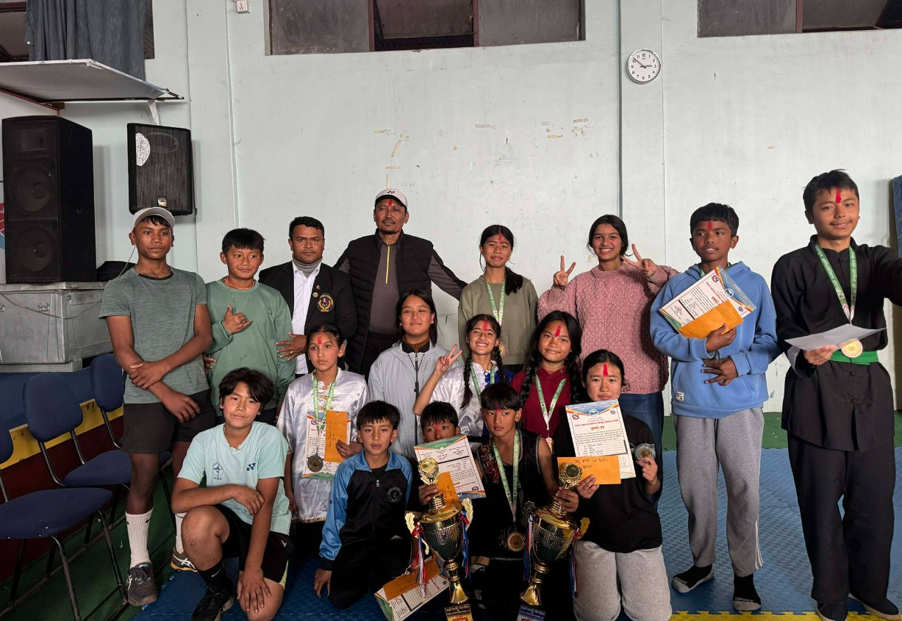

A premier Waldorf educational institution dedicated to holistic development, academic excellence, and character building for a brighter future.
Happy Students
Expert Faculty
Awards Won


We are committed to providing the best Waldorf educational experience
Student-centered Waldorf teaching methodology for better understanding
Secure campus with nurturing environment following Waldorf principles
Building knowledge, skills, values for complete personality growth
Monthly meetings and progress reports for continuous improvement
Comprehensive Waldorf education from Kindergarten to Grade 10
Ages 3-6 | A sanctuary of wonder, warmth, and unhurried childhood rooted in rhythms of nature.
Learn MoreA living education through meaning, artistic richness, and developmentally attuned main lesson blocks.
Learn MoreAge 14-16 | A rigorous and holistic curriculum emphasizing integration, depth, and SEE preparation.
Learn More